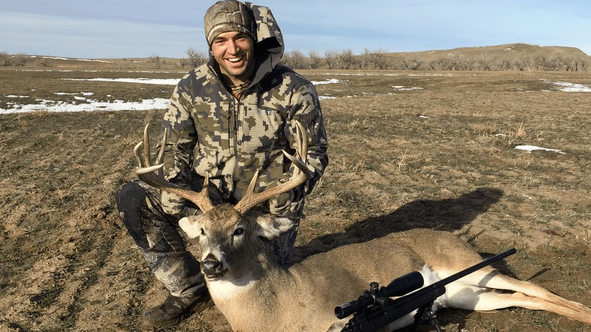

Parker Cotts
Parker has grown up loving the outdoors especially hunting and fishing and this love for the outdoors led to him founding GGT Outdoors. Some of Parker’s favorite things about hunting is spending time with family and friends, enjoying God’s creation, and of course chasing anything from screaming bulls to rutting bucks and even to gobbling turkeys. When Parker isn’t hunting or preparing for hunting season you will probably find him with some sort of fishing pole or getting ready to go camping with some buddies. Parker especially loves sitting by the fire in the evenings listening to stories about the adventures the others have had that day. #godsgotthis

Nathan Cotts
Tim is an avid marksman and outdoorsman who carries a deep love and appreciation for all aspects of nature. He loves any opportunity to experience God’s created wonders though hiking, camping, hunting, fishing and wilderness meditation. Tim is a gunsmith who specializes in long range rifles and is dedicated to precision whether he is loading rounds at the bench, building rifles at the lathe, shooting on the range, or hunting in the woods. Tim loves sharing the outdoors with others in various ways, especially teaching the finer aspects of precision shooting or introducing young people to the thrill of the hunt.

Tim King
Tim is an avid marksman and outdoorsman who carries a deep love and appreciation for all aspects of nature. He loves any opportunity to experience God’s created wonders though hiking, camping, hunting, fishing and wilderness meditation. Tim is a gunsmith who specializes in long range rifles and is dedicated to precision whether he is loading rounds at the bench, building rifles at the lathe, shooting on the range, or hunting in the woods. Tim loves sharing the outdoors with others in various ways, especially teaching the finer aspects of precision shooting or introducing young people to the thrill of the hunt.
Connor Auteberry
Tim is an avid marksman and outdoorsman who carries a deep love and appreciation for all aspects of nature. He loves any opportunity to experience God’s created wonders though hiking, camping, hunting, fishing and wilderness meditation. Tim is a gunsmith who specializes in long range rifles and is dedicated to precision whether he is loading rounds at the bench, building rifles at the lathe, shooting on the range, or hunting in the woods. Tim loves sharing the outdoors with others in various ways, especially teaching the finer aspects of precision shooting or introducing young people to the thrill of the hunt.
Tim Norton
Tim is an avid marksman and outdoorsman who carries a deep love and appreciation for all aspects of nature. He loves any opportunity to experience God’s created wonders though hiking, camping, hunting, fishing and wilderness meditation. Tim is a gunsmith who specializes in long range rifles and is dedicated to precision whether he is loading rounds at the bench, building rifles at the lathe, shooting on the range, or hunting in the woods. Tim loves sharing the outdoors with others in various ways, especially teaching the finer aspects of precision shooting or introducing young people to the thrill of the hunt.
Alexavier Brink
Tim is an avid marksman and outdoorsman who carries a deep love and appreciation for all aspects of nature. He loves any opportunity to experience God’s created wonders though hiking, camping, hunting, fishing and wilderness meditation. Tim is a gunsmith who specializes in long range rifles and is dedicated to precision whether he is loading rounds at the bench, building rifles at the lathe, shooting on the range, or hunting in the woods. Tim loves sharing the outdoors with others in various ways, especially teaching the finer aspects of precision shooting or introducing young people to the thrill of the hunt.